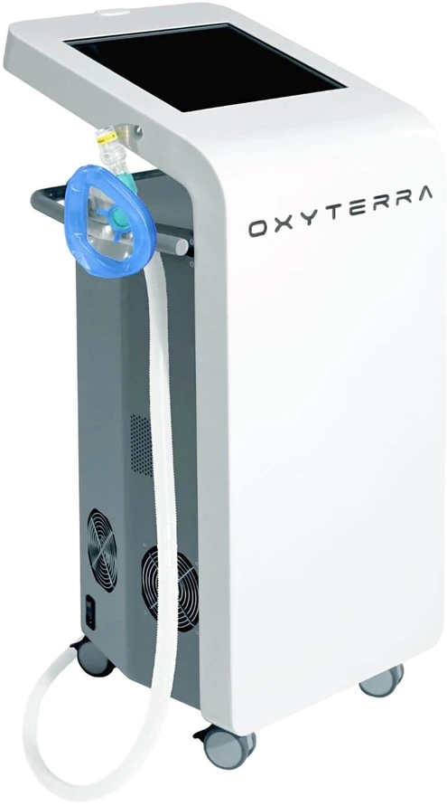

Интервальная гипоксически-гипероксическая тренировка
Управляемая дыхательная тренировка, направленная на развитие адаптационных возможностей организма.

Стоимость
- Интервальная дыхательная тренировка60 минут
- 4 200 ₽
- Тренировка с беговой дорожкой30–60 минут
- 6 900 ₽
- Одноразовая маска для ИГГТ
- 1 500 ₽
- Продолжительность сеанса
- 30–60 минутВ покое — 60 минут; с беговой дорожкой — 30–60 минут
- Дыхательная смесь
- Переменное содержание кислородаЧередование гипоксии и гипероксии
- Контроль показателей
- Пульс и сатурацияНасыщение крови кислородом отслеживается датчиком
- Формат тренировки
- В покое или в движенииВариант с беговой дорожкой — по назначению врача
Суть метода
Это дыхательная тренировка, при которой аппарат попеременно подаёт через маску воздух с пониженным и повышенным содержанием кислорода. На короткое время организм оказывается в условиях, напоминающих высокогорье, а затем получает обогащённую кислородом дыхательную смесь.
Такое чередование создаёт дозированную нагрузку на естественные механизмы адаптации организма. В обычном варианте процедуры вы спокойно отдыхаете, а аппарат отслеживает пульс и насыщение крови кислородом. Специалист контролирует тренировку и подбирает её параметры индивидуально.
Для чего применяется
В основе метода лежит способность организма приспосабливаться к изменяющимся условиям окружающей среды. Как физическая тренировка создаёт нагрузку для мышц, так интервальная гипоксически-гипероксическая тренировка (ИГГТ) создаёт дозированный стимул для систем, обеспечивающих доставку и использование кислорода. При этом это разные виды нагрузки, и дыхательная тренировка не заменяет физическую активность.
Клеточный энергетический обмен
Кислород необходим митохондриям — структурам внутри клеток, которые обеспечивают значительную часть выработки АТФ (аденозинтрифосфата), основного источника доступной клетке энергии.
При кратковременном снижении доступности кислорода активируются механизмы клеточной адаптации. Они участвуют в регуляции энергетического обмена, реакции на окислительный стресс и поддержании функционального состояния митохондрий. Последующая фаза восстановления позволяет организму вернуться к более высокой доступности кислорода.
Исследователи рассматривают эти процессы как один из возможных механизмов действия метода. Это не означает, что каждый сеанс гарантированно обновляет митохондрии или увеличивает выработку энергии.
Адаптация к физическим нагрузкам
Дыхательная тренировка изучается как дополнительный инструмент развития функциональной выносливости и переносимости нагрузок. В ряде исследований после курса процедур отмечалось улучшение отдельных показателей физической работоспособности и потребления кислорода.
Для гостей курорта это может быть частью индивидуальной программы восстановления и подготовки к физической активности.
Сердечно-сосудистая и дыхательная системы
В фазе пониженного содержания кислорода организм меняет работу дыхательной системы и кровообращения, чтобы адаптироваться к новым условиям. Пульс и характер дыхания могут изменяться, а насыщение крови кислородом временно снижается.
В фазе восстановления доступность кислорода повышается. Повторение таких циклов изучается в связи с регуляцией кровообращения, артериального давления и переносимостью физической нагрузки. Результат зависит от исходного состояния человека и программы тренировок.
Метаболическая адаптация
В клинических исследованиях изучается влияние курса ИГГТ на регуляцию углеводного обмена и другие метаболические показатели. Получены обнадёживающие результаты в отдельных группах пациентов, однако метод не заменяет питание, движение, назначенные лекарства и лечение обменных нарушений.
Восстановительные программы
ИГГТ применяется как дополнительный метод в отдельных программах медицинской реабилитации. В частности, российские специалисты исследовали применение аппарата OXYTERRA при восстановлении после COVID-19 в сочетании с традиционными реабилитационными мероприятиями.
В рамках превентивной медицины процедура может быть актуальна
- для гостей, заинтересованных в развитии адаптационных возможностей организма;
- в индивидуальных программах повышения физической работоспособности и восстановления;
- для людей с ограниченной переносимостью обычных физических нагрузок — после медицинской оценки;
- как дополнительный элемент комплексных программ, ориентированных на поддержание функционального состояния сердечно-сосудистой и дыхательной систем.
При выраженной усталости, одышке или снижении работоспособности сначала необходимо выяснить их причину. Наличие хронического заболевания само по себе не является основанием для назначения ИГГТ.
Как работает метод
Обычный атмосферный воздух содержит около 21% кислорода. Аппарат OXYTERRA формирует дыхательные смеси с различным его содержанием, не изменяя атмосферного давления.
Гипоксия — фаза адаптационной нагрузки. Человек дышит смесью с пониженным содержанием кислорода. Насыщение крови кислородом может временно уменьшаться, организм реагирует на изменение его доступности.
Гипероксия — фаза восстановления. Аппарат подаёт смесь, содержащую больше кислорода, чем обычный воздух. Это способствует восстановлению насыщения крови кислородом после гипоксического интервала.
Циклы повторяются по индивидуальной программе. Аппарат также поддерживает режимы с восстановлением на обычной по содержанию кислорода смеси (нормоксия); конкретный режим определяет специалист.
Ключевой принцип — не максимально насытить кровь кислородом, а создать контролируемое чередование нагрузки и восстановления.
Как проходит процедура
- Перед началом специалист оценивает состояние гостя, уточняет сведения о здоровье и определяет подходящий режим. При необходимости проводится тест на индивидуальную переносимость гипоксии.
- Гость удобно располагается в положении покоя. На лицо надевается дыхательная маска, на палец — датчик пульсоксиметра.
- Аппарат последовательно меняет состав дыхательной смеси. Дышать необходимо естественно, без намеренных задержек дыхания или форсированных вдохов.
- На протяжении сеанса контролируются частота пульса и сатурация (насыщение крови кислородом). Специалист наблюдает за самочувствием и при необходимости корректирует или прекращает тренировку.
- После завершения процедуры оценивается самочувствие гостя.
В покое сеанс длится 60 минут, а вариант с беговой дорожкой — 30–60 минут. Параметры тренировки определяются индивидуально с учётом рекомендаций специалиста.
Тренировка с беговой дорожкой
В клинике также предусмотрен отдельный вариант услуги — интервальная гипоксически-гипероксическая тренировка с использованием беговой дорожки.
В этом случае дыхательная тренировка сочетается с дозированной физической нагрузкой. К естественной реакции на изменение содержания кислорода добавляется повышенная потребность работающих мышц в энергии и кислороде.
Такой формат отличается от пассивного сеанса и требует отдельной оценки переносимости нагрузок. Возможность его проведения, интенсивность движения и режим дыхательной тренировки определяет врач. Услуга не является автоматически более эффективной или подходящей каждому гостю.
Продолжительность и подготовка
В клинике предусмотрены два варианта: дыхательная тренировка в покое — 60 минут, тренировка с беговой дорожкой — 30–60 минут. Рекомендуемое количество посещений зависит от индивидуальной программы.
Специальных дыхательных навыков не требуется. Для процедуры рекомендуется удобная одежда, не стесняющая дыхание; для варианта с беговой дорожкой — одежда и обувь для физической активности.
Перед первым сеансом необходимо сообщить специалисту о хронических заболеваниях, принимаемых препаратах, недавно перенесённых операциях и инфекциях, а также о любых эпизодах одышки, потери сознания или боли в груди. Не изменяйте самостоятельно режим назначенных лекарств.
Ограничения и самочувствие
ИГГТ — управляемая физиологическая нагрузка, а не обычная ингаляция кислорода. При выборе процедуры необходимо учитывать состояние сердечно-сосудистой, дыхательной и нервной систем.
Процедуру не начинают без медицинской оценки при следующих состояниях:
- острые заболевания, лихорадка, обострение хронических заболеваний;
- нестабильные сердечно-сосудистые состояния, недавние острые сосудистые события, клинически значимые нарушения сердечного ритма или неконтролируемое артериальное давление;
- выраженная дыхательная недостаточность или необъяснимое снижение сатурации в покое;
- эпилепсия и другие состояния с риском судорожных приступов;
- состояния, при которых человек не может безопасно пользоваться маской или сообщать о своём самочувствии;
- беременность — вопрос допуска решается отдельно врачом.
Это перечень основных ситуаций, требующих медицинской оценки, а не исчерпывающий официальный перечень противопоказаний конкретной модификации OXYTERRA. Окончательный допуск определяет врач согласно инструкции аппарата и локальному протоколу.
Во время гипоксической фазы могут изменяться дыхание и пульс. При выраженной одышке, головокружении, боли в груди, сильном сердцебиении, тошноте или тревоге необходимо сразу сообщить специалисту. При таких симптомах тренировку прекращают и оценивают состояние гостя.
Чем отличается от других методов
| Метод | Принцип |
|---|---|
| Интервальная гипоксически-гипероксическая тренировка | Чередование дыхательных смесей с разным содержанием кислорода при обычном атмосферном давлении. Цель — дозированный адаптационный стимул. |
| Классическая кислородотерапия | Подача дополнительного кислорода по медицинским показаниям, например при гипоксемии. |
| Барокамера | Дыхание в условиях повышенного окружающего давления, что изменяет доступность кислорода для организма. |
| Кардиотренировка | Физическая нагрузка, тренирующая мышцы, сердечно-сосудистую и дыхательную системы. |
Дыхательная тренировка может дополнять физическую активность, но не заменяет её и не воспроизводит все её преимущества.
История метода
Научная идея интервальных гипоксических тренировок связана с изучением адаптации человека к высокогорью. Исследователи установили, что организм способен перестраивать физиологические реакции при изменении доступности кислорода.
В дальнейшем появились аппараты, позволяющие моделировать отдельные аспекты кислородной нагрузки без подъёма в горы и изменения атмосферного давления. Одним из направлений развития стало чередование гипоксических интервалов с периодами дыхания обогащённой кислородом смесью.
Частые вопросы
Зачем мне дыхательная тренировка, если я уже приехал в горы?
Отдых на Алтае, прогулки и физическая активность на свежем воздухе сами по себе ценны. Но дыхательная тренировка позволяет управлять содержанием кислорода во вдыхаемой смеси и чередовать периоды нагрузки и восстановления. Это другой формат воздействия, который невозможно точно воспроизвести обычной прогулкой.
Почему сначала кислорода меньше, а потом больше? Разве недостаток кислорода не вреден?
Длительный или чрезмерный недостаток кислорода действительно опасен. В тренировке его снижение дозируется и чередуется с восстановлением. Именно поэтому важны индивидуальный подбор режима и контроль состояния гостя.
Нужно ли специально глубоко дышать или задерживать дыхание?
Нет. В стандартном варианте достаточно спокойно и естественно дышать через маску, следуя указаниям специалиста.
Это то же самое, что барокамера?
Нет. В барокамере изменяется окружающее давление, а здесь — содержание кислорода во вдыхаемом воздухе. Цели и физиологические механизмы процедур различаются.
Заменяет ли процедура спортивную тренировку?
Нет. Она может использоваться как дополнительный инструмент адаптации, но не обеспечивает всей совокупности эффектов физической активности, включая нагрузку на мышцы и костную ткань.
Зачем измеряют сатурацию?
Сатурация показывает, насколько гемоглобин крови насыщен кислородом. Во время ИГГТ этот показатель помогает оценивать индивидуальную реакцию на дыхательную смесь вместе с пульсом и самочувствием.
Можно ли ощутить результат после одного посещения?
Ощущения во время и после процедуры индивидуальны. Основные исследования адаптационных эффектов посвящены курсам тренировок, поэтому устойчивый эффект после одного сеанса обещать нельзя.
Можно ли сочетать с другими процедурами курорта?
Да, в составе индивидуальной программы, если это соответствует рекомендациям врача. Последовательность и общую нагрузку следует учитывать при сочетании нескольких физиологически активных процедур в один день.
Научное обоснование
Аппарат OXYTERRA («Окситерра»)
Интервальная гипоксически-гипероксическая тренировка изучается в физиологии, спортивной и восстановительной медицине. Научный интерес связан прежде всего с реакциями организма на изменение доступности кислорода и возможностями дозированной адаптации.
Аппарат OXYTERRA использовался непосредственно в российском клиническом исследовании, посвящённом реабилитации пациентов после COVID-19. Международные исследования метода также оценивают его влияние на функциональную выносливость, дыхательную систему и метаболические показатели.
Научные исследования и публикации
2022 — Клиническое исследование непосредственно на OXYTERRA
С. А. Воловец, Т. Н. Цыганова, Н. Г. Бадалов. «Эффективность гипо-гипероксических тренировок в медицинской реабилитации пациентов, перенёсших COVID-19». Журнал «Физиотерапия, бальнеология и реабилитация», 21(1), 35–46.
В открытом рандомизированном сравнительном исследовании участвовали 50 пациентов: 30 получали ИГГТ на OXYTERRA дополнительно к стандартной реабилитации, 20 — только стандартную реабилитацию. Авторы сообщили об улучшении ряда показателей кислородного транспорта, дыхательной функции и гемодинамики у участников основной группы.
Ограничения: небольшая выборка, открытый дизайн, конкретная группа пациентов; один из авторов связан с компанией Cellgim-Rus. Эти результаты не подтверждают такой же эффект у здоровых гостей или при любом протоколе процедуры.
Оригинальная публикация · DOI: 10.17816/rjpbr109501
2022 — Систематический обзор исследований ИГГТ у людей
«Effects of Intermittent Hypoxia–Hyperoxia on Performance- and Health-Related Outcomes in Humans: A Systematic Review». Sports Medicine – Open.
В обзор вошли восемь контролируемых исследований и пилотных работ. Авторы описали положительные изменения отдельных показателей переносимости нагрузок, максимального потребления кислорода, когнитивной функции и концентрации глюкозы в крови. Изучались преимущественно конкретные клинические группы и различные программы тренировок.
Из-за неоднородности исследований количественный метаанализ не проводился. Убедительного доказательства превосходства гипероксической фазы над восстановлением на обычном воздухе пока нет. Необходимы более крупные качественные исследования.
2026 — Рандомизированное исследование у пожилых людей
Arturo Ladriñán-Maestro и соавторы. «Effects of a 6-Week Intermittent Hypoxia-Hyperoxia Exposure Program on Blood Pressure, Respiratory Function, Cardiac Autonomic Nervous Activity and CRP Levels in Older Adults». Sports, 14(1), 42.
В двойном слепом контролируемом исследовании участвовали 22 человека. После шестинедельной программы авторы выявили изменения силы вдоха, некоторых показателей вегетативной регуляции сердца и С-реактивного белка — маркера воспаления. Небольшая выборка ограничивает возможность обобщения результатов. Исследование не подтверждает лечение воспалительных, аутоиммунных или инфекционных заболеваний и не является исследованием конкретной установки нашей клиники.
PubMed · DOI: 10.3390/sports14010042
Техническая информация об оборудовании
Производитель OXYTERRA описывает формирование гипоксических, нормоксических и гипероксических смесей, индивидуальный подбор режимов и обратную связь по пульсу и сатурации. Это источник информации о возможностях аппарата, а не независимое доказательство всех заявленных лечебных эффектов.
Описание аппарата производителем · Сведения о регистрационном удостоверении РЗН 2023/21861
Вывод. ИГГТ имеет физиологическое обоснование и перспективную клиническую доказательную базу по отдельным показателям. Однако оптимальные режимы, долгосрочная эффективность и польза для здоровых людей требуют дальнейшего изучения. Результаты исследований курса процедур не следует переносить на один сеанс или на все программы конкретного курорта.